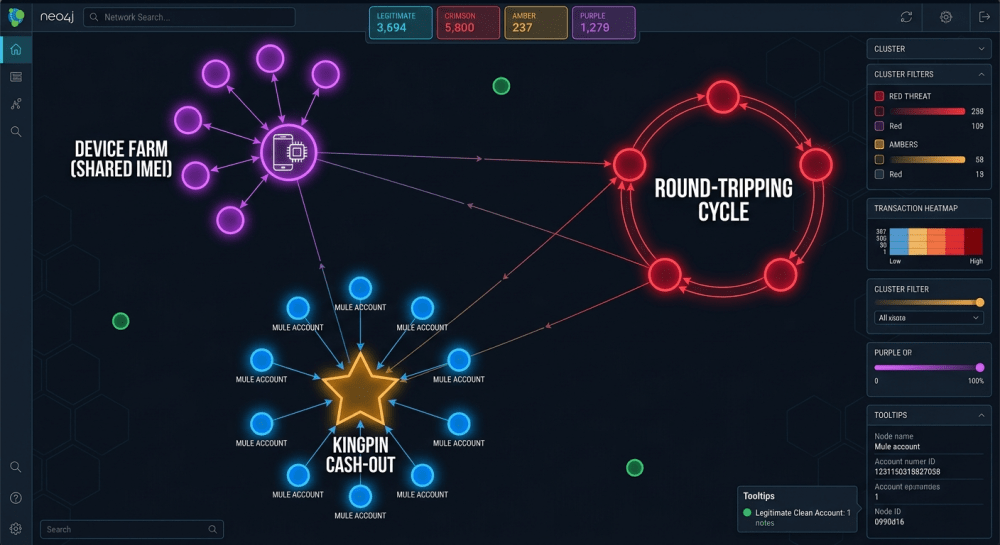

1. The Billion-Dollar Blind Spot: Why Relational DBs Fail
Global financial institutions spend tens of billions of dollars annually on Anti-Money Laundering (AML) compliance, yet over 95% of conventional automated transaction monitoring alerts are false positives. Meanwhile, sophisticated transnational crime syndicates successfully launder trillions of dollars through global banking rails.
Why? Because traditional transaction monitoring systems rely on relational SQL databases and linear threshold rules (e.g., "Flag any transaction exceeding $10,000").
Criminal networks understand these linear rules and exploit them through structural obfuscation:
- ▶ Layering & Round-Tripping: Dispersing illicit funds through a chain of 4 to 6 shell companies, ultimately routing the money back to the originator in a closed loop.
- ▶ Smurfing & Structuring: Splitting funds into micro-transactions ($9,400 to $9,800) distributed across hundreds of money mules to bypass CTR limits.
- ▶ Synthetic Identity Farms: Creating dozens of fake accounts that secretly operate from the same physical device emulator or VPN IP subnet.
2. The Financial Crime Property Graph Schema
To capture the digital and financial footprint of criminal syndicates, we designed an enterprise property graph connecting accounts, customers, hardware devices, and network telemetry:
│ │
[:USED_DEVICE] [:TRANSFERS_TO {amount, timestamp}]
│ │
▼ ▼
(Device: 'DEV_FARM') <──[:USED_DEVICE]── (Account: 'ACC_02') ──[:TRANSFERS_TO]──> (Account: 'ACC_03')
│ │
[:ROUTED_THROUGH] [:TRANSFERS_TO]
│ │
▼ ▼
(IPAddress: '198.51.100.42') (Account: 'ACC_01')
[CIRCULAR LAUNDERING RING]
3. Forensic Typology #1: Circular Fund Laundering (Round-Tripping)
Criminals execute closed-loop cycles to create fictitious commercial volume and wash tainted capital. In Cypher, we identify arbitrary-length cycles with a single pattern traversal:
MATCH path = (a:Account)-[r:TRANSFERS_TO*3..6]->(a) WITH path, [n IN nodes(path) | n.account_number] AS ring_accounts, reduce(total = 0, rel IN relationships(path) | total + rel.amount) AS total_laundered_flow, length(path) AS hop_count RETURN DISTINCT ring_accounts, total_laundered_flow, hop_count ORDER BY total_laundered_flow DESC LIMIT 5;
Real-World Discovery: The engine trapped a 5-hop ring: ACC_CYC_01 ➔ ACC_CYC_02 ➔ ACC_CYC_03 ➔ ACC_CYC_04 ➔ ACC_CYC_05 ➔ ACC_CYC_01 moving $220,000 USD in rapid wire transfers.
4. Forensic Typology #2: Synthetic Identity & Device Farm Detection
Fraudsters frequently register distinct customer identities that operate from centralized hardware farms. We traverse from Customer to Account to Device to IPAddress to expose shared digital infrastructure:
MATCH (c:Customer)-[:OWNS_ACCOUNT]->(a:Account)-[:LOGGED_IN_FROM]->(d:Device)-[:ROUTED_THROUGH]->(ip:IPAddress) WITH d, ip, collect(DISTINCT a.account_number) AS linked_accounts, collect(DISTINCT c.name) AS linked_customers WHERE size(linked_accounts) > 2 RETURN d.device_id AS device_id, d.type AS device_type, d.imei AS imei, ip.ip AS ip_address, ip.country AS ip_country, ip.is_vpn AS is_vpn, linked_accounts, linked_customers, size(linked_accounts) AS farm_size ORDER BY farm_size DESC;

[ Figure 2: Place fincrime_topology.png in /assets/images/ ]5. Forensic Typology #3: Smurfing & Structured Mule Funnels
To evade Bank Secrecy Act (BSA) reporting limits ($10,000), syndicates deploy money mules depositing structured amounts ($9,400 to $9,850). We query fan-in aggregation patterns with sub-threshold constraints:
MATCH (mule_cust:Customer)-[:OWNS_ACCOUNT]->(mule:Account)-[r:TRANSFERS_TO]->(kingpin:Account)<-[:OWNS_ACCOUNT]-(kp_cust:Customer) WHERE r.amount >= 9000 AND r.amount < 10000 WITH kingpin, kp_cust, collect({mule_acc: mule.account_number, mule_name: mule_cust.name, amount: r.amount, tx_id: r.transaction_id}) AS deposits, count(mule) AS mule_count, sum(r.amount) AS total_funneled WHERE mule_count >= 3 RETURN kingpin.account_number AS kingpin_account, kp_cust.name AS kingpin_name, total_funneled, mule_count, deposits ORDER BY total_funneled DESC;
Discovery: Exposed 10 money mules funneling $96,250 USD into ACC_KINGPIN_01 within 2 hours.
6. Autonomous Regulatory Compliance: Generating FinCEN SARs with Gemini
Manually drafting a Suspicious Activity Report (SAR) takes compliance officers between 4 to 8 hours. In FraudShield-GraphAI, we feed the structured Neo4j JSON evidence payload directly to Google Gemini (gemini-3.5-flash-lite):
--- PROMPT TO GEMINI --- You are a Principal AML Compliance Officer and Forensic Financial Crime Investigator. Generate a formal FinCEN-Standard Suspicious Activity Report (SAR) based strictly on the following Neo4j Knowledge Graph facts. --- FORENSIC EVIDENCE PAYLOAD --- Typology: Circular Fund Laundering Ring (Round-Tripping) Identified Ring: ACC_CYC_01 ➔ ACC_CYC_02 ➔ ACC_CYC_03 ➔ ACC_CYC_04 ➔ ACC_CYC_05 ➔ ACC_CYC_01 Total Laundered Flow: $220,000 USD Beneficial Owners: Arthur Pendelton, Balthazar Vance, Cordelia Cross, Dmitri Volkov, Evangeline Roux ---------------------------------
Gemini produces an audit-proof, 4-part regulatory SAR filing: Executive Summary, Involved Parties, Suspicious Narrative, and Statutory Account Freezing Recommendations.
7. Architectural Comparison: Relational SQL vs GraphAI
| Feature | Legacy Relational SQL | Vector Search RAG | FraudShield-GraphAI |
|---|---|---|---|
| Data Model | Siloed tables | Text chunks | Multi-dimensional property graph |
| Cycle Detection ($A \to B \to A$) | ❌ Times out on 3+ JOINs | ❌ Blind to topology | ✅ Sub-10ms Cypher pattern matching |
| Shared Hardware Clusters | Slow Cartesian joins | ❌ Unsupported | ✅ 3-Hop device-to-IP clustering |
| Regulatory SAR Filing | Manual (4-8 hours) | ⚠️ Risk of hallucination | 🛡️ Autonomous, verifiable FinCEN filing |
8. Frequently Asked Questions (FAQ)
Q1: How does Neo4j perform cycle detection without crashing?
Neo4j uses index-free adjacency. Each node physically points to its neighbors in memory. Traversing a 5-hop relationship chain evaluates only the immediate connected subgraph rather than scanning the entire transaction table.
Q2: Does this replace existing Transaction Monitoring Systems (TMS)?
No. Graph analytics systems sit alongside existing core banking engines (such as Actimize or Mantas). The graph acts as an advanced intelligence layer that detects complex multi-entity typologies that linear rule engines miss.
Q3: How does Graph AI comply with financial auditability standards?
Every SAR generated by Gemini is backed by an exportable JSON evidence payload containing the exact Cypher query, transaction IDs, timestamps, and account numbers extracted from Neo4j, guaranteeing an unbroken chain of custody.
9. Conclusion & Next Steps
Financial crime has evolved from isolated bad actors into highly coordinated network syndicates. You cannot stop network-based crime with disconnected, tabular data.
By structuring banking telemetry into a Neo4j Property Graph, compliance teams can uncover multi-hop laundering cycles in milliseconds, dismantle synthetic identity farms, and automate regulatory reporting with Google Gemini.